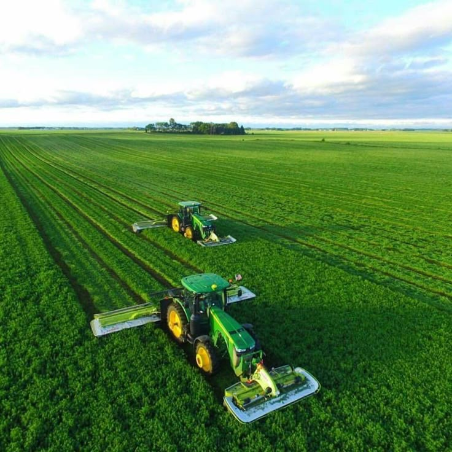

Matek Agrotech Global limited is a technology enabled agricultural, procurement, supply chain, and business solutions company, connecting resources, expertise, technology, and markets for the people who depend on all four.
We support farmers, businesses, institutions, investors, and strategic partners with solutions that make operations more efficient, coordinated, and scalable. Agricultural and commercial projects usually run into trouble at the seams between disconnected vendors, where a land developer, an input supplier, and a logistics provider each hand off responsibility to the next, and coordination falls through the cracks. Matek exists to close those gaps, managing land preparation, inputs, procurement, logistics, and digital tracking under one roof.

To provide integrated, technology-enabled solutions that improve agricultural productivity, operational efficiency, market access, and sustainable growth.
To build a leading platform connecting agriculture, technology, supply chains, and markets across Africa and beyond.
A technology company that never loses touch with the soil, and a farming partner that never stops measuring performance.
Land. Inputs. Data. One partner. Connecting agriculture,
technology, procurement and logistics into one integrated
system.


1 Akin Adesola Akintola Street, Victoria Island,
Lagos 101241, Nigeria

www.matekagrotech.com